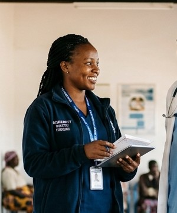
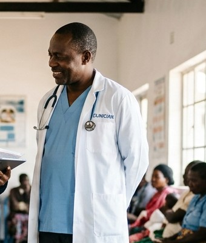

Sharing knowledge to end tuberculosis
KNCV TB Plus (KNCV) is a global non-profit organisation. Since its establishment in 1903, KNCV’s mission has been to save lives and end human suffering through the promotion of health and the global elimination of tuberculosis (TB) and other related diseases.

Our vision
Healthy people in a world free of TB and other related diseases.
We emphasize the positive, optimistic message that tuberculosis is a curable disease, giving our work a human face while remaining sincere, resilient, and grounded in reality.
Our mission
To save lives and end human suffering through the promotion of health and the global elimination of tuberculosis and other related diseases.
Our tagline: KNCV: Together we can end TB.
Putting people first through innovative, effective, and sustainable strategies
We always put people first through innovative, effective, and sustainable strategies that demonstrate positive impact on people’s health and accelerate the global decline of TB and other related diseases. In our strategy we aim for system readiness to scale-up through effective interventions for prevention, diagnosis and treatment.
Knowledge Exchange Objectives
Build capacity
Strengthen clinical and programmatic competencies of health workforces worldwide.
Share evidence
Translate scientific research and field-tested innovations into daily clinical practice.
Connect people
Foster an active global learning network across National TB Programmes and civil society.
Open access
Ensure training, toolkits, and standard operating procedures remain accessible to all.
The KNCV Knowledge Institute Model
The intersection of three core disciplines driving evidence-based tuberculosis elimination and sustainable health systems worldwide.
Innovation
Pioneering modern digital health, artificial intelligence for chest X-ray screening, and breakthrough point-of-care molecular diagnostic technologies.
Collaboration
Uniting National TB Programmes, WHO, international universities, frontline healthcare workers, and affected communities across 30+ countries.
Quality Assurance
Upholding clinical standards, ISO laboratory accreditation, evidence validation, and continuous clinical audit to deliver peer-reviewed excellence.
Our knowledge-sharing approach
Programmatic, integrated, patient-centred, and continuous learning from field evidence to national scale-up.
Assess & Capture
Collect field experience, epidemiological data, and operational research evidence.
Design
Turn clinical evidence into practical toolkits, SOPs, and structured learning modules.
Deliver
Offer self-paced courses, facilitated cohorts, and live technical briefings.
Scale & Improve
Health workers apply skills in clinics; continuous feedback strengthens national TB programmes.
Faculty & subject-matter experts
Meet the KNCV TB Plus clinical consultants, epidemiologists, and programme specialists who design and teach our courses.
Dr. Carlos Rodriguez
Senior TB Consultant

Grace Mensah, MPH
Epidemiologist & Field Lead

Dr. Samuel Okafor
Senior Programme Advisor
Dr. Elena Rostova
DR-TB Clinical Specialist
Partners & collaborators
Working alongside Ministries of Health, government agencies, and multilateral partners worldwide to end TB.
Start learning with KNCV TB Plus today
Join thousands of healthcare professionals building clinical and programmatic skills worldwide.